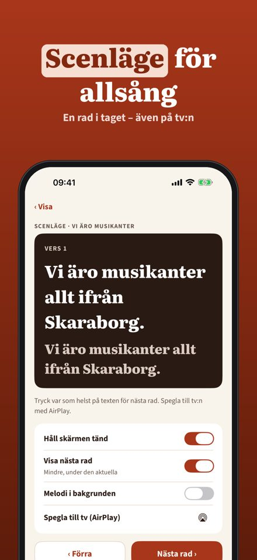
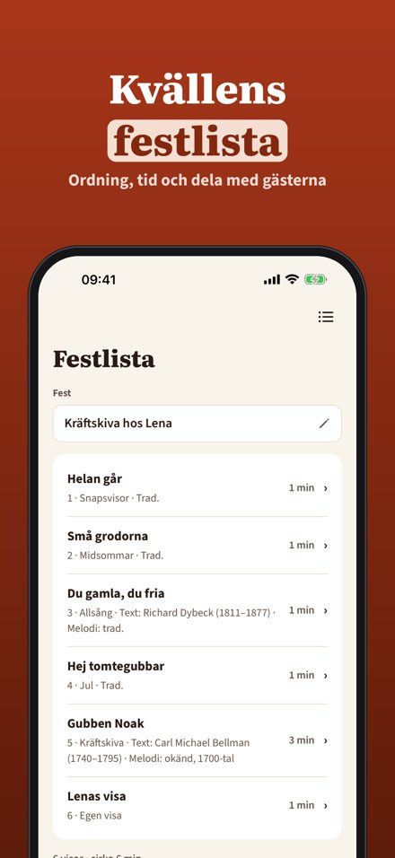
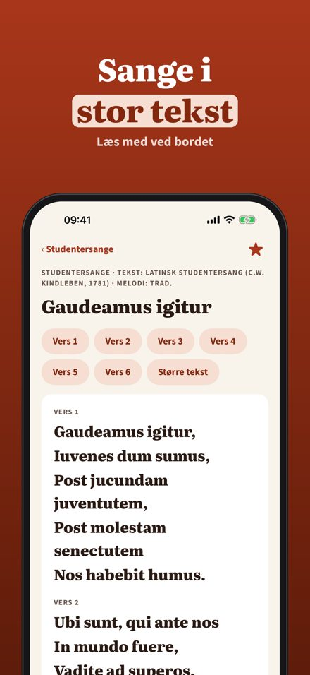
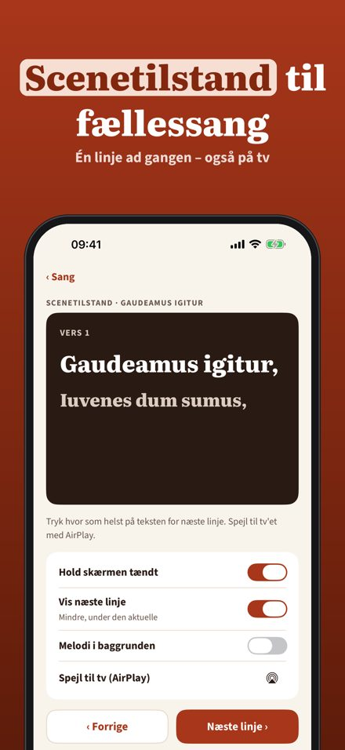
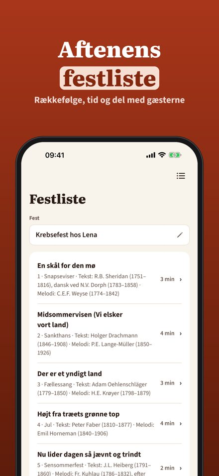
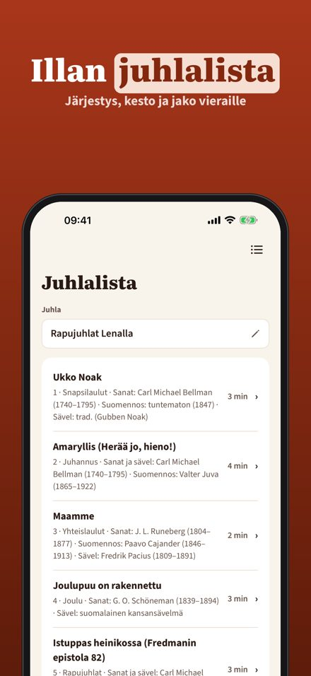
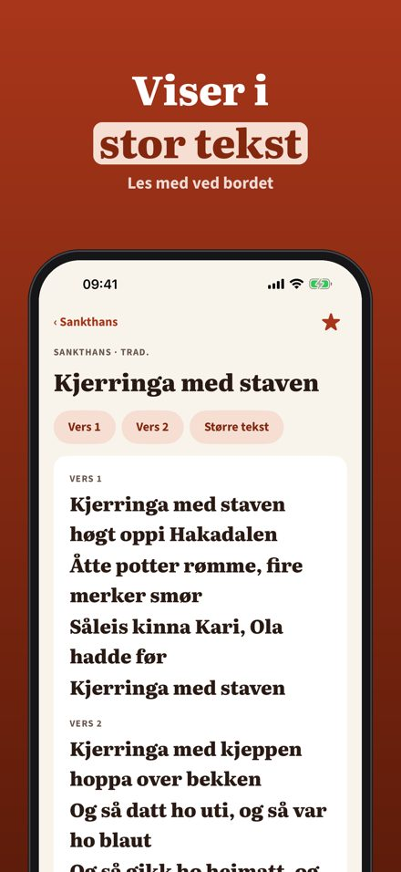
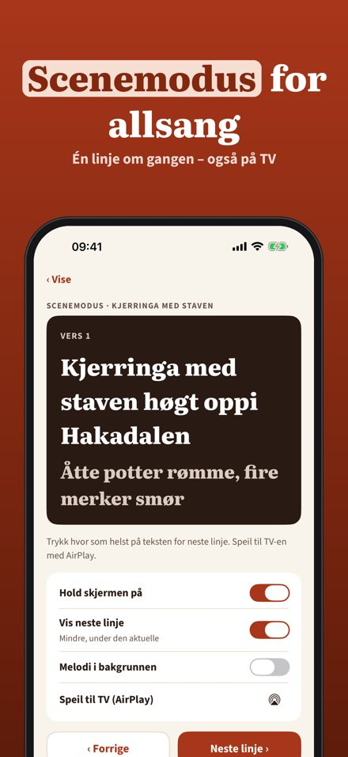
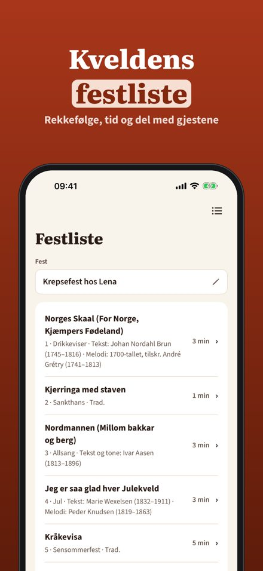

Visor till fest och allsång
Traditionella visor till kräftskiva, midsommar, jul och studentfest – i stor text, med scenläge för allsång och en festlista för kvällen.


Skålklar är en sångbok med traditionella visor till festen: stor text, scenläge, visehjul och festlistor. Källan står vid varje visa.
20 visor, visehjulet, favoriter och en egen visa kan användas utan köp. Plus är ett engångsköp som låser upp alla visor, scenläget, festlistor och obegränsat med egna visor. Ingen prenumeration.
Skålklar innehåller bara traditionella visor eller texter där upphovsrätten har löpt ut. Källan står vid varje visa. Egna visor stannar på telefonen. Ingen reklam, inget konto.
Terms of Use (EULA): https://www.apple.com/legal/internet-services/itunes/dev/stdeula/
Privacy: https://baytechbv.github.io/privacy/skalklar-nordic/
Sange til fest og fællessang
Traditionelle sange til julefrokost, sankthans, studenterfest og fællessang – i stor tekst, med scenetilstand og en festliste til aftenen.



Skålklar er en sangbog med traditionelle sange til festen: stor tekst, scenetilstand, sanghjul og festlister. Kilden står ved hver sang.
20 sange, sanghjulet, favoritter og én egen sang kan bruges uden køb. Plus er et engangskøb, der låser alle sange, scenetilstand, festlister og ubegrænset egne sange op. Intet abonnement.
Skålklar indeholder kun traditionelle sange eller tekster, hvor ophavsretten er udløbet. Kilden står ved hver sang. Egne sange bliver på telefonen. Ingen reklamer, ingen konto.
Terms of Use (EULA): https://www.apple.com/legal/internet-services/itunes/dev/stdeula/
Privacy: https://baytechbv.github.io/privacy/skalklar-nordic/
Laulukirja juhliin
Perinteisiä lauluja rapujuhliin, juhannukseen, jouluun ja sitseille – isolla tekstillä, lavatilalla yhteislauluun ja juhlalistalla illan ohjelmaan.

Visklar on laulukirja perinteisille juhlalauluille: iso teksti, lavatila, laulupyörä ja juhlalistat. Lähde näkyy jokaisen laulun kohdalla.
20 laulua, laulupyörä, suosikit ja yksi oma laulu ovat käytössä ilman ostoa. Plus on kertaosto, joka avaa kaikki laulut, lavatilan, juhlalistat ja rajattomasti omia lauluja. Ei tilausta.
Visklar sisältää vain perinteisiä lauluja tai tekstejä, joiden tekijänoikeus on päättynyt. Lähde näkyy jokaisen laulun kohdalla. Omat laulut pysyvät puhelimessa. Ei mainoksia, ei tiliä.
Terms of Use (EULA): https://www.apple.com/legal/internet-services/itunes/dev/stdeula/
Privacy: https://baytechbv.github.io/privacy/skalklar-nordic/
Viser til fest og allsang
Tradisjonelle viser til julebord, sankthans, studentfest og allsang – i stor tekst, med scenemodus og en festliste for kvelden.



Skålklar er en sangbok med tradisjonelle viser til festen: stor tekst, scenemodus, visehjul og festlister. Kilden står ved hver vise.
20 viser, visehjulet, favoritter og én egen vise kan brukes uten kjøp. Plus er et engangskjøp som låser opp alle viser, scenemodus, festlister og ubegrenset med egne viser. Ingen abonnement.
Skålklar inneholder bare tradisjonelle viser eller tekster der opphavsretten er utløpt. Kilden står ved hver vise. Egne viser blir på telefonen. Ingen reklame, ingen konto.
Terms of Use (EULA): https://www.apple.com/legal/internet-services/itunes/dev/stdeula/
Privacy: https://baytechbv.github.io/privacy/skalklar-nordic/